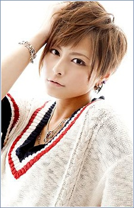

Momoko Oohara was a Japanese voice actress. She was affiliated with Mausu Promotion. She retired on October 31, 2016.
- Gender: Female
- Birthday: March 12, 1988
- Hometown: Kanagawa, Japan
- Retire: October 31, 2016

| |
Momoko Oohara was a Japanese voice actress. She was affiliated with Mausu Promotion. She retired on October 31, 2016.
|
 |
|---|
 |
Glaceon | Pokemon Black and White: Rival Destinies | Glaceon is a Pokemon from the Sinnoh region. Glaceon is one of the final forms of Eevee. This Pokemon is able to create small ice crystals around it by controlling its body temperature. This person voices Vigil's Glaceon. |